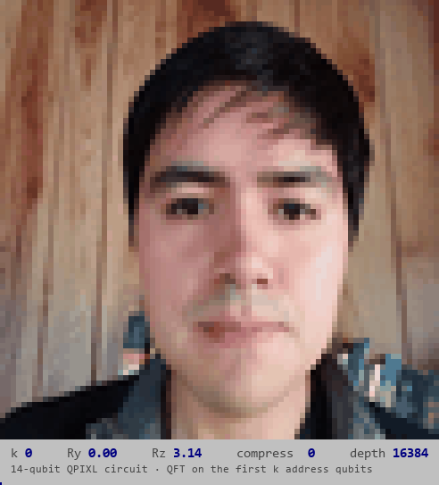

About Me
I like quantum computers. I just think they are neat.
I've been working in the quantum industry for the last 4 years, focusing on quantum algorithms and their potential applications in various domains.
At the moment, I'm working at Pasqal, a French quantum computing company building neutral-atom QPUs. I mainly work on quantum algorithm research and development for Pasqal's quantum hardware in Analog/Digital mode.
I enjoy participating in quantum hackathons and being part of the quantum open-source community.
